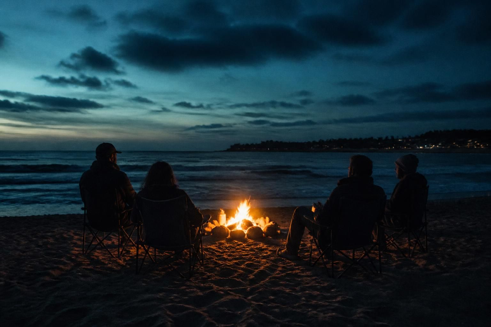
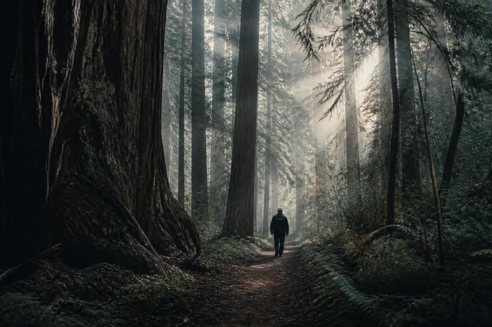

Frontline Fellowship
The uniform comes off. The heavy silence begins. We cut through the red tape to deliver emergency extractions, wilderness decompression, and real advancement support across Santa Cruz County.
The uniform comes off. The heavy silence begins. We cut through the red tape to deliver emergency extractions, wilderness decompression, and real advancement support across Santa Cruz County.
You pull out of the gate, turn in the badge or the uniform, and watch the doors close. The silence in the truck is heavy. One minute you have a unit, a mission, and a fixed grid; the next minute you're navigating a civilian world that moves at a crawl and speaks a language you don't recognize.
When your nervous system is wired for the field, a stale office feels like a cage. But the real enemy isn't just bureaucracy—it’s the slow poison of isolation. When a veteran or first responder is left alone with their head after service, compounding with PTSD and the crushing weight of civilian survival, the spiral is fast: self-medication, substance abuse, despair, and the final, preventable tragedy of suicide.
We aren’t running a comfort retreat. We are running an intervention pipeline.
We don’t do corporate runarounds, and we don't leave people to rot behind 30-day waiting lists. They clocked in for us when the world was on fire. It’s our turn to clock in for them before it's too late. Never leave a man behind.
We bridge professional competence with street-level execution. Drawing on years of specialized counseling experience within Substance Use Disorder (SUD) treatment settings and over a decade and a half in public safety, we understand the specific crises veterans and first responders face—translating that deep background into direct, peer-to-peer accountability that cuts through the red tape.
Rooted in long-term public safety experience, knowing firsthand the structural weight of the uniform and why veterans and first responders reject slow bureaucratic runarounds.
Informed by hands-on counseling work in structured treatment environments tailored to veterans and first responders, utilizing that professional insight to ground our peer support and stabilization pipelines in reality.
We are stationed in a region with deep natural sanctuary—and we use our local geography and infrastructure to bring veterans and first responders back to center, away from clinical waiting rooms and corporate red tape.

When a veteran or first responder hits a critical wall in the elements—caught in freezing weather or severe crisis—our pooled fund deploys immediate hotel vouchers across our local network. No paperwork bottlenecks. Just a safe door that locks, a hot shower, and a night of real, uninterrupted rest.

We leverage our local environment across Santa Cruz County—taking trail hikes deep through the redwoods, gathering around evening beach fires on the Monterey Bay, and breaking bread over coffee at local spots. It’s about getting veterans and responders out of isolation and back into real human connection.

Survival is step one. When a veteran or first responder is ready to pivot back into the civilian economy, we back their next move—covering trade school textbooks, job skill materials, or dialing in a professional resume to break through civilian hiring walls.
No rigid, generic charity tiers. One pooled fund dedicated entirely to direct field operations, emergency hotel extractions, peer fellowship gatherings, and veteran/first responder advancement across Santa Cruz County.
100% of your donation goes straight to help a local veteran or first responder in crisis: securing an emergency hotel room for the night, fueling a peer fellowship gathering, or covering trade transition essentials.